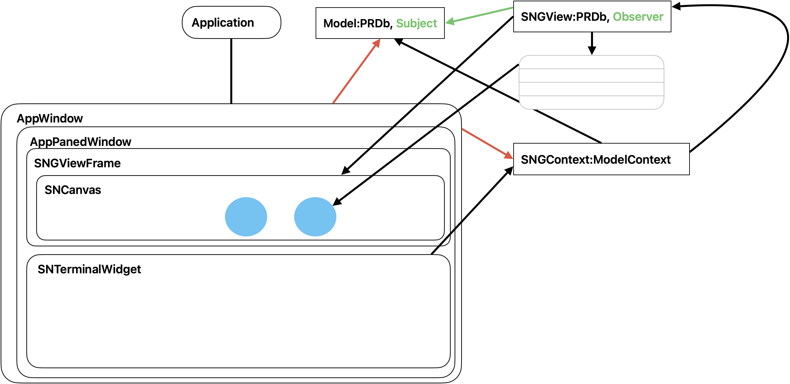

sn.view.graphics.guiApp module¶


Relationship diagram for the guiApp classes.¶
Created on Aug 18, 2026
@author: robkremer
- exception sn.view.graphics.guiApp.UnexpectedObjectInFile¶
Bases:
Exception
- class sn.view.graphics.guiApp.Application¶
Bases:
TkThe invisible root Tk window and manages one or more Toplevel windows.
- Parameters:
appName (str) – Name used for the hidden root window’s title (mostly cosmetic, since it’s never shown).
- current: Application | None = None¶
The application (there’s just the one).
- __init__()¶
Return a new top level widget on screen SCREENNAME. A new Tcl interpreter will be created. BASENAME will be used for the identification of the profile file (see readprofile). It is constructed from sys.argv[0] without extensions if None is given. CLASSNAME is the name of the widget class.
- directoryPane: DirectoryPane | None¶
The model directory, once it’s been shown: it fills this (the main) window (see showDirectory()).
- _noOp()¶
Root window has no close button the user can reach, but guard anyway.
- Return type:
None
- _installSettingsMenu()¶
Wire up a Settings item under the app item in the menu bar.
On macOS, Tk always shows an “Application menu” — the one named after the app, to the immediate right of the Apple logo — whether or not the app defines any menu of its own. That’s “the app item.” Its “Preferences…” entry is present but disabled/inert unless something registers the special Tcl command ‘tk::mac::ShowPreferences’; this does that registration, so choosing it (or its standard ⌘, shortcut) opens openSettings() below.
On Windows/Linux, Tk has no equivalent automatic app menu, so this command is never invoked there: Settings is in the File menu there instead (see _installMenubar()).
Called once, from __init__: there’s exactly one root/”app item” no matter how many AppWindows get opened, so this belongs here rather than being (re-)registered — and guarded against re-registration — from every window.
- Return type:
None
- _installQuitHandler()¶
Wire up the “Quit” item under the app item in the menu bar.
Same macOS mechanism as _installSettingsMenu() above, but where “Preferences…” is inert until registered, “Quit <AppName>” already does something by default: Tk wires it to the Tcl procedure ‘tk::mac::Quit’, whose default implementation calls Tcl’s own exit command directly. Since Tcl is embedded inside this same Python process (not the reverse), that tears the whole process down at the C level without ever going back through CPython’s normal shutdown sequence – which is the only thing that runs the atexit callbacks registered in sn/__init__.py (saveAtExit(), savePrefsIfChanged()). Registering our own handler here (see onQuit()) intercepts that default and runs the same cleanup explicitly before tearing down, instead of silently skipping it.
Called once, from __init__, alongside _installSettingsMenu() – see its docstring for why this belongs here rather than being (re-)registered from every window.
- Return type:
None
- onOpenDocument(*paths)¶
Handle files the Finder asks a packaged app to open (double-clicked, or dropped on its icon) – the macOS way of passing them, rather than the command line. Each opens in a window, as with Open….
- Parameters:
paths (str) – The files’ paths.
- Return type:
None
- onOpenFromAnotherCopy(paths)¶
Handle the editor being started again while it’s running (on Windows and Linux: see main()): open the files it was started with, each in a window, as onOpenDocument() does; or if there are none, bring a window to the front.
- Parameters:
paths (list[str]) – The files.
- Return type:
None
- onQuit()¶
Handle the “Quit <AppName>” item in macOS’s automatic app menu.
See _installQuitHandler() for why this override is necessary at all: without it, quitting via that menu item (or its Cmd+Q shortcut) bypasses Python’s normal interpreter shutdown entirely, so the atexit-registered saveAtExit()/savePrefsIfChanged() never run and unsaved models/views are silently lost. Call them explicitly here, then tear down.
- Return type:
None
- _installMenubar()¶
Builds the app menu bar.
Creates the menu bar. Tk will keep auto-populating a cascade we create under one of its reserved names (“apple”, “window”, “help”), so recreate “window” and “help” here to get that native content back.
Called once, from __init__, alongside _installSettingsMenu().
- Returns:
The menu bar.
- Return type:
Menu
- showHelp(page)¶
Show a page of the documentation in the web browser: the copy bundled in a packaged app, or else the project’s built documentation. It’s served from 127.0.0.1 (see util.folderServer), not opened as a file: URL, since Safari won’t load a file: page’s stylesheets from its parent folder (“../_static/”), so it would show unstyled.
- Parameters:
page (str) – The page, relative to the documentation’s top, eg: “user/index.html”.
- Return type:
None
- openSettings()¶
Show the app-wide Settings dialog: an attribute editor on sn.snPrefs, applying the changes to it (saved when the program ends: see sn.savePrefsIfChanged()). Only the settings’ values are shown: their types and qualifiers are fixed, and their notes – documentation, from sn.PREFS – are their names’ tooltips.
- Return type:
None
- doOpen()¶
Respond to the “Open…” menu item.
- doOpenURL()¶
Respond to the “Open URL…” menu item: open a view, or a model in its default view, at a URL (eg: on the web: opened read-only – see openEntry()).
- Return type:
None
- doNew()¶
Respond to the “New…” menu item.
- openWindow(viewSpec)¶
Create and show a new Toplevel window hosted under the invisible root.
- openViewOn(model, viewURL)¶
Open a window on model: its view saved at viewURL if there is one there (see openWindow()), or else a new view of it that’ll be saved there – eg: a model with no file of its own (the system model, sn), or one read from a copy (the base rules).
- Parameters:
model (Model) – The model.
viewURL (str) – Where its view is (or will be) saved.
- Returns:
The window.
- Return type:
Toplevel | None
- modelCopiesOf(url)¶
- Parameters:
url (str) – Where a model was.
- Returns:
The models that have been moved or copied from there (see Directory.copiesOf()): in the model directory, if it’s been filled; else in the search path’s folders on this computer.
- Return type:
list[Entry]
- askForMissingModel(viewURL, modelURL)¶
A view being read names a model that can’t be found (eg: it’s been moved): ask which to show in its place (see SNGView.askForMissingModel).
- Parameters:
viewURL (str)
modelURL (str)
- Returns:
Its URL; or None (cancelled).
- Return type:
str | None
- changeModel(view, url)¶
Show another model in view (File | Change model…): eg, a copy of its model. Its window is closed and the view’s read again from its file, with the model at url in place of its own (see SNGView.modelReplacements): its objects show the objects with the same ids in it. It’s changed then: saving it names the new model. (Its unsaved changes are lost: see FilesMixin.doChangeModel().)
- Parameters:
view (SNGView)
url (str)
- Returns:
The view’s new window, if it’s opened.
- Return type:
tk.Toplevel | None
- DIRECTORY_PREF = '.directory'¶
The model directory’s geometry, if it was shown when the app last quit (see rememberOpenWindows()); else “”. (Hidden from Settings: see OPEN_WINDOWS_PREF.)
- DIRECTORY_GEOMETRY = '860x520+40+60'¶
Where the model directory’s first shown.
- PROGRESS_DELAY = 0.5¶
Seconds a job (eg: opening a file) goes on before the directory’s shown, if it’s hidden, for its progress bar.
- directoryShown()¶
- Returns:
Whether the model directory is shown (see showDirectory()).
- Return type:
bool
- showDirectory(show=True, geometry=None)¶
Show (or hide) the model directory (see DirectoryPane): the models and views in the search path’s folders. It’s this, the app’s main window – hidden while it isn’t shown. (Window | Model Directory.)
- Parameters:
geometry (str | None) – Its size and position, if not as it was.
show (bool)
- Return type:
None
- _onDirectoryClose()¶
The model directory’s close button: hide it – and if there are no other windows, quit, as closing the last window does.
- Return type:
None
- _refreshDirectory()¶
Show what’s open, and what isn’t, in the model directory (if it’s been shown).
- Return type:
None
- noteFile(*urls)¶
Models or views at urls have been opened, made or saved: add their folders to the search path (if they aren’t in it), and show them in the model directory as they are now.
- Parameters:
urls (str)
- Return type:
None
- openEntry(entry, readOnly=False)¶
Open a model directory entry: a view, or a model in its default view (see openWindow()).
- Parameters:
entry (sn.model.directory.Entry)
readOnly (bool) – Whether to write-lock its model, so it can’t be changed (nor saved). Not if the model’s open already, and not locked: it’s opened as it is then (and the user’s told).
- Returns:
Its window.
- Return type:
Toplevel | None
- _onProgress(label, done, total)¶
Show how a job’s going (see progress) in the model directory – showing it, if it’s hidden, once the job’s gone on for PROGRESS_DELAY seconds (and hiding it again when it’s done).
- Parameters:
label (str | None)
done (int)
total (int | None)
- Return type:
None
- _hideAfterProgress()¶
Hide the model directory, if it was shown just for a job’s progress (see _onProgress()), and no job’s under way now.
- Return type:
None
- RECENT_PREF = '.recentFiles'¶
The preference listing the views opened most recently, most recent first (see noteRecent()). (Hidden from Settings: see OPEN_WINDOWS_PREF.)
- RECENT_KEPT = 50¶
How many recent views are remembered, whatever “gui/recentFiles” (how many are listed) is.
- RECENT_LABEL_LENGTH = 100¶
The most characters File | Open Recent shows of a view’s path or URL.
- recentFiles()¶
- Returns:
The views opened most recently, most recent first: each {“view”: its URL, “model”: its model’s URL}.
- Return type:
list[dict[str, str]]
- _setRecentFiles(entries)¶
- Parameters:
entries (list[dict[str, str]])
- Return type:
None
- noteRecent(viewURL, modelURL)¶
Put a view (and its model) at the top of the recently opened ones (see recentFiles(), and File | Open Recent).
- Parameters:
viewURL (str)
modelURL (str)
- Return type:
None
- openRecent(entry)¶
Open a recently opened view (File | Open Recent): its view, if it’s been saved; else its model (with its default view). If neither can be found any more, say so, and take it off the list.
- Parameters:
entry (dict[str, str]) – One of recentFiles().
- Return type:
None
- _fillRecentMenu()¶
(Re)fill the File | Open Recent menu from recentFiles(): as many as the “gui/recentFiles” preference says, each shown as its whole path (with “~” for the home folder) or, if it’s on the web, its whole URL (a very long one loses some of its middle), then “Clear Menu”.
- Return type:
None
- OPEN_WINDOWS_PREF = '.openWindows'¶
The preference recording the windows open when the app last quit (see rememberOpenWindows()). (Its name starts with “.”, so the Settings dialog doesn’t show it: it isn’t for the user to edit.)
- rememberOpenWindows()¶
Record the open windows – each one’s view, its model and its size and position – in the preferences, for reopenWindows() the next time the app starts. (When packaged as a .app, the app is normally started with no files to open, so this is how it comes back the way it was left.)
- Return type:
None
- reopenWindows()¶
Reopen the windows recorded by rememberOpenWindows(), in the same size and position. A view that was never saved opens as its model’s default view; one whose files have gone is skipped (with a message). The views open as they were last saved – unsaved changes, and the undo history, are gone.
- Returns:
The number of windows reopened.
- Return type:
int
- startUp(files)¶
Open a window on each of files (views, .snv, or models, .snm); with none, reopen the windows open when the app last quit (see reopenWindows()) – and the model directory, if it was shown then – and if there were none, show the model directory (see showDirectory()).
- Parameters:
files (list[str]) – Files named on the command line.
- Return type:
None
- loadPlugins()¶
Install the plugins that come with the program (if they’re missing, or older), and load the plugins (see sn.plugins): they add to the menu bar. Done on start-up (see startUp()), not when an Application’s made, so that a script (eg: a test) that makes one gets the editor without them.
- Return type:
None
- revealPlugins()¶
The Help menu’s Reveal Plugins Folder: open the folder the plugins are installed in (see sn.plugins.PLUGINS_FOLDER) in the Finder – made, if it isn’t there yet. (A plugin added or changed there is loaded when the editor next starts.)
- Return type:
None
- EXAMPLES_PREF = '.examplesInstalled'¶
True once the example models have been installed (see installExamples()): it’s only done once. (Hidden from Settings: see OPEN_WINDOWS_PREF.)
- EXAMPLES_FOLDER = '/Users/kremer/Documents/Semantic Nets Examples'¶
Where installExamples() puts the example models.
- installExamples(replace=False)¶
Copy the example models that come with the app into EXAMPLES_FOLDER, and open their views: on the first launch (see startUp()), or when asked to (see onInstallExamples()).
- Parameters:
replace (bool) – Whether to replace copies already there. If not (as on the first launch), an existing folder is left as it is.
- Returns:
True iff any were opened.
- Return type:
bool
- onInstallExamples()¶
The Help menu’s Install Example Models: put fresh copies of the example models that come with this version of the app in EXAMPLES_FOLDER – replacing any copies there (once the user agrees: changes made to them are lost) – and open them. Their windows are closed first, and the models forgotten, so the new files are read afresh. (Any other files in the folder are left alone.)
- Return type:
None
- closeModel(model, askToSave=True, quitIfNone=True)¶
The File menu’s Close model: close every window on model (offering to save each changed view, as closing them by hand does), offer to save the model if it’s changed, and forget it – so opening it again reads the file afresh. If that was the last window, the app quits, as it does when the last window is closed by hand.
A model that other loaded models build on (eg: one of their types isa one of its) can’t be closed: they’d be left pointing at it. Nothing is changed then.
- Parameters:
model (Model) – The model.
askToSave (bool) – Whether to offer to save the model and its changed views. False when they’re being replaced (see replacingModel()).
quitIfNone (bool) – Whether to quit if no window is left open. False when another is about to be opened (see replacingModel()).
- Returns:
Whether it was closed.
- Return type:
bool
- replacingModel(path, askToSave=False)¶
Before a model’s file is made afresh, in place of the one that’s there (eg: by a plugin, once the user’s agreed to replace it): if the model at path is in memory – eg: its window is open – close its windows, without offering to save them (they’re being replaced), and forget it. Otherwise Model(path) would hand back that model, with all it had, and what’s made would be added to it – and its open views told of each new object.
Or, with askToSave, before a model’s file is changed by a program (eg: a plugin updating it): offering to save it, and its changed views, first – so that the program reads (and changes) the file as it’s been left.
- Parameters:
path (str) – The model’s file (or URL).
askToSave (bool) – Whether to offer to save the model and its changed views.
- Returns:
False if it can’t be forgotten (other models use it: see closeModel()), and so mustn’t be replaced; else True.
- Return type:
bool
- closeAllWindows()¶
Close every hosted window via _closeWindow(), so each view gets exactly the same save check (and clean-up) on quitting as it would if the user closed its window individually.
- Return type:
None
- _closeWindowOf(window)¶
Close window (its close button: see AppWindow), whatever it’s filed under in windows – which needn’t be the URL it was made with (eg: a copied file’s view is filed under where it is now, or a view saved as another file). One that isn’t filed at all is still closed.
- Parameters:
window (AppWindow) – The window.
- Return type:
None
- _closeWindow(name, quitIfLast=True, askToSave=True)¶
Close a specific hosted window and check whether the app should exit.
- Parameters:
name (str) – The window’s key, as passed to openWindow.
quitIfLast (bool) – Quit the application if this was the last window. False when the caller is already quitting (see closeAllWindows()).
askToSave (bool) – Whether to offer to save the window’s view if it’s changed. False when the user has already agreed to lose the changes (see onInstallExamples()).
- Return type:
None
- quit()¶
Tear down the entire application, including the hidden root.
- Return type:
None
- run()¶
Start the Tk event loop.
- Return type:
None
- sn.view.graphics.guiApp._filePath(url)¶
- Parameters:
url (str) – A file’s URL (eg: “file:///Users/me/family.snv”).
- Returns:
Its path.
- Return type:
str
- sn.view.graphics.guiApp._fileName(url)¶
- Parameters:
url (str) – A file’s URL.
- Returns:
Its name (eg: “family.snv”).
- Return type:
str
- class sn.view.graphics.guiApp.AppWindow(tkdottk, viewURL, geometry='300x400+20+20', **kwargs)¶
Bases:
ToplevelA top-level SN app window that also acts as the holder of the SNContext Model controller.
- Parameters:
tkdottk (tk.Tk)
viewURL (str)
geometry (str)
- __init__(tkdottk, viewURL, geometry='300x400+20+20', **kwargs)¶
A window for the view at viewURL: titled with it, at geometry; closing it closes the view’s window (see Application._closeWindowOf()).
- Parameters:
tkdottk (Tk)
viewURL (str)
geometry (str)
- view: SNGView | None¶
The SNGView that owns this window – set by SNGView.__init__() right after it constructs this AppWindow, so this window’s FocusIn/FocusOut handling (see _onWindowFocusIn()/_onWindowFocusOut()) can dispatch straight to the SNGView that should react to it.
- _bindFocusTracking(widget)¶
Recursively bind <FocusIn>/<FocusOut> on this widget and all its descendants so this AppWindow notices when the user’s focus enters or genuinely leaves it, wherever within it that focus lands.
Binding only on
self(the AppWindow/Toplevel itself) is not enough – Tk’s FocusIn/FocusOut events fire on the specific widget that gained/lost focus, not on its ancestors, so focusing e.g. a canvas or entry deep inside this window would never reach a binding placed only on the top-level widget. Same shape of problem as (and modeled on) _bindFocusRouting() above.- Parameters:
widget (tk.Widget) – The widget (and its children, recursively) to bind.
- Return type:
None
- _refreshSizeLimits()¶
Have Tk recompute this window’s largest size from the screens there are now.
On the Mac, Tk gives a window a maximum size (the area all the screens cover) only when it sets the window’s geometry, and doesn’t update it when a screen is added or rearranged: a window opened before a bigger monitor was connected couldn’t be made any larger than the old screens. Setting the minimum size (to what it is) has Tk set both limits again.
- Return type:
None
- _onWindowFocusIn(event=None)¶
Some widget inside this window just gained focus – let this window’s SNGView (if any) know it’s now the focused one.
- Parameters:
event – The Tk event.
- Return type:
None
- _onWindowFocusOut(event=None)¶
Some widget inside this window just lost focus.
This alone doesn’t mean the window was deactivated – moving focus between two widgets in the SAME window (e.g. tabbing fields) fires a FocusOut on the old one too. Defer the real check to _checkStillActive() via after_idle(), by which point the new focus owner (if any) has already been set, so self.focus_get() reliably reflects where focus actually ended up.
- Parameters:
event – The Tk event.
- Return type:
None
- _checkStillActive()¶
Let this window’s SNGView (if any) know focus has genuinely moved outside this window (as opposed to just moving between two of its own descendant widgets – see _onWindowFocusOut()).
- Return type:
None
- _bindFocusRouting(widget, terminal)¶
Recursively bind <FocusIn>/<FocusOut> on this widget and all its descendants so that focusing ANY widget in the window (terminal or graphics editor) sets this window’s terminal as the default stdio/input() routing target.
- Parameters:
widget (tk.Widget) – The widget (and its children, recursively) to bind.
terminal (SNTerminalWidget) – This window’s terminal — the routing target.
- Return type:
None
- class sn.view.graphics.guiApp.AppPanedWidget(parent, **kwargs)¶
Bases:
PanedWindowA (tkinter.PanedWindow) with two panes: above, and application widget according the frame parameter of the constructor, and below, a disabled text widget which is used by this class’s various service methods to display messages such as logging info:
AppPanedWidget (graphics)
SNTerminalWidget (text)
- Parameters:
parent (AppWindow)
- __init__(parent, **kwargs)¶
- Parameters:
parent (AppWindow) – The parent AppWindow.
fixedAppFrame – [bool, default:False] Specifies whether the application frame is fixed-size or stretchable.
commandParser – [CommandParser , default: an new TygraCommandParser() ] User input from the commmandEntryWidget is sent to this parser.
**kwargs –
An arguments dict to passed to the tk.PanedWindow constructor. The following arguments are defaulted if not present:
”orient” default = tk.VERTICAL
”showhandle” default = False
”sashwidth” default = 3
”bd” default = 4
”bg” default = “grey”
”borderwidth” default = 0
- canvasFrame: SNGViewFrame¶
- class sn.view.graphics.guiApp.SNGViewFrame(parent, **kwargs)¶
Bases:
Frame- Parameters:
parent (AppPanedWidget)
- __init__(parent, **kwargs)¶
- Parameters:
parent (AppPanedWidget) – The master Widget.
kwargs – Passed to Canvas.
- terminal: TerminalWidget¶
- registry: TerminalRegistry¶
- sn.view.graphics.guiApp.main()¶
Run the graphical editor: a window on each file named on the command line, or else as Application.startUp() says. On Windows and Linux, if the editor’s already running, the files are handed to it instead (see util.singleInstance): on the Mac, the Finder does that itself (see Application.onOpenDocument()).
- Return type:
None